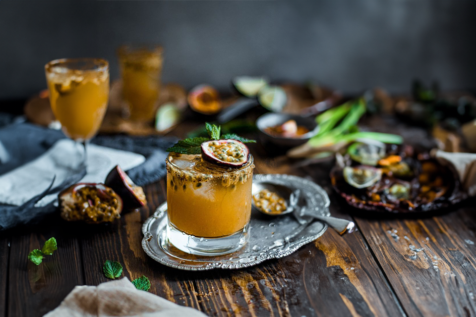

Mocktail
TrølleMock
Idé og baggrund
En af vores idéer til en Mocktail er denne "Passion Bliss" Mocktail
Historien bag "Passion Bliss" Mocktail begynder i en tropisk oase, hvor solen kysser sandet og havet synger sin stille sang. En lokal frugtbonde, inspireret af de frodige passionsfrugter, der danser i vinden, beslutter sig for at skabe en forfriskende og sanselig mocktail. Denne mocktail bliver en hyldest til øens naturlige skatte og den lyksalighed, der opstår ved at nyde en perfekt blanding af tropiske smagsoplevelser.
Baggrund for dyret på øllen
Der er endnu ikke noget fastsat dyr til denne Mocktail. Men den vil komme.

Indhold
1 dl passionsfrugtpuré, 1/2 dl ananasjuice, 1/2 dl kokosvand, Friskpresset saft fra en lime, Isterninger og Friske mynteblade til pynt
Næringsindhold (ca. værdier pr. 100 ml)
Kalorier: Ca. 40 kcal, Kulhydrater: Ca. 9 g, Sukker: Ca. 7 g, Protein: Ca. 1 g, Fedt: Ca. 0 g, Mættet fedt: Ca. 0 g, Kostfibre: Ca. 1 g og Natrium: Ca. 5 mg
Vitaminer
Vitamin C, Vitamin A og Kalium